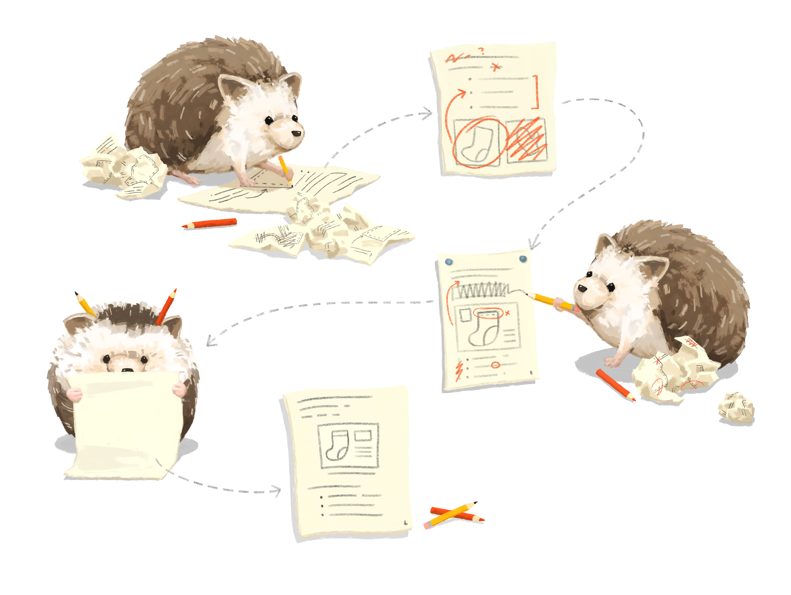

#install.packages("usethis")
library(usethis) 
배경
제가 논문을 blogdown을 포함하는 bookdown으로 쓰게 된 건, R을 기반으로 한 데이터 분석 결과를 매번 업데이트 하는 과정에서 자잘한 변경을 모두 트래킹 하기 어려웠기 때문입니다. 재현 가능한 연구(reproducible research) 를 위해서라도 R로 논문을 쓰는 게 필요했고, 당시 블로그를 시작할까 도전하면서 며칠을 낑낑 댔던 기억이 나네요.
이후 등장한 distill은 블로그에 최적화된 간결한 기능을 사용자 친화적인 함수로 제공하여 훨씬 간편해졌어요. distill은 인용, 각주 등이 잘 구현되어 있다는 점, 그리고 css를 잘 몰라도 기본적인 구성은 아주 쉽게 구현할 수 있다는 강점을 갖고 있습니다.
Distill의 기능을 대부분 포괄하면서 가장 최근에 나온 Quarto Blog 툴은 자바스크립트(JS) 기반 부트스트랩5을 탑재하고 있어 개인화 작업이 손 쉬워 졌습니다.
R로 블로그 만드는 3가지 방법
blogdown(2017 ~ ): R로 작성하는 html 기초 문법 제공- bookdown 패키지의 서브 버전으로 기본 문법을 이해하면 다른 패키지나 시스템 이해도가 크게 높아집니다.
- 온라인 ebook은 무료로 제공 되고 있습니다.
- 패키지 저자 Yihui Xie의 공식 가이드북을 추천합니다.
- bookdown 패키지의 서브 버전으로 기본 문법을 이해하면 다른 패키지나 시스템 이해도가 크게 높아집니다.
distill(2018 ~ ): 블로그에 최적화된 레이아웃 제공- 과학 블로그, 기술 블로그에 최적화된 웹출판 도구로 패발된 패키지 입니다.
- 수학식, 인용, 각주 등을 손쉽게 사용할 수 있도록 편의성을 제공합니다.
- 각종 편의 기능을 제공하는 함수로 블로그 포스팅을 쉽고 빠르게 할 수 있어요.
- quarto 블로그 시스템에 distill을 차용하고 있기 때문에 레퍼런스로 활용할 만 합니다.
- 공식 홈페이지는 여기 참고하세요.
- 과학 블로그, 기술 블로그에 최적화된 웹출판 도구로 패발된 패키지 입니다.
quarto(2022 ~ ): 패키지가 아닌 문서 작성 도구 distill 기능을 대부분 계승합니다.- Quarto는 Posit에서 공식 개발, 확장 중인 시스템으로 빠르게 기능이 확장 되고 있습니다.
- R 생태계를 파이썬과 연결하려는 시스템 입니다.
- RStudio 외에 쥬피터노트북, VS Code에서도 사용할 수 있어요.
Quarto 장점
- R 패키지가 아닌 문서 작성 시스템 입니다.
- R 이외 파이썬 언어로도 작성 가능합니다.
- 블로그, 홈페이지, MS워드, PDF, ePub 등 다양한 문서 작성을 지원합니다.
- Quarto -> Github -> 제3자 퍼블리싱 연계가 쉽습니다.
Quarto 단점
- 개인화 하려면 배워야 할 게 많습니다.
- R마크다운, yaml, html, css, JS는 기본적으로 이해할 필요가 있어요.
- git에 대한 기본 이해도 필요해요.
- Netlify 같은 호스팅 서비스도 필요해요.
- 패키지가 아니라서 클릭 한 번으로 블로그 포스팅 템플릿이 자동 생성되지 않습니다.
- 블로그 포스팅 마다 폴더를 만들고, 그 안에 Rmd(R마크다운) 파일을 개별 생성해야 합니다.
어떻게 시작하나요?
Quarto 설치
Posit 홈페이지에서 사용하는 OS 시스템에 맞는 버전을 다운로드 후 설치 합니다. 2024-02-15 1.4.550 버전이 출시 되었습니다.
Quarto Blog 프로젝트 만들기
가장 쉬운 방법은 RStudio에서 신규 프로젝트를 생성할 때, Quarto Blog를 선택하는 겁니다. 프로젝트에서 자동으로 기본 뼈대 구성에 필요한 폴더들과 파일을 만들어 줍니다. 일단은 개인화는 나중에 생각하고, 해당 템플릿을 활용해서 index.Rmd를 나의 블로그 포스팅으로 수정하기만 해도 블로그를 시작하는 거죠.
여기까지 얼마나 걸릴까요? 블로그 포스팅 소재만 준비되어 있다면 하루도 안 걸립니다.
Github 연동하기
git에 대해 잘 모르거나 github를 써 보지 않았다면 처음에 조금 헤맬 수 있어요. 관련된 포스팅은 다음 기회에 자세히 하기로 하구요, 초보를 위한 usethis 패키지를 활용할께요.
(1) 깃헙 계정 만들기
GitHub 계정이 없다면 이번 기회에 만듭니다.
(2) usethis 패키지 설치
usethis 패키지를 설치 하고 불러 옵니다.
(3) 깃헙 계정과 RStudio 연결
Happy Git and GibHub for the useR을 참조하시면 왠만한 건 다 해결 될 거에요.
우리가 참고할 부분은 17 Existing project, Github last입니다.
usethis::use_git()(4) 깃 패널 확인
위 명령을 실행하면 RStudio 우측 상단 Environment가 있는 패널에 ’Git’이라는 패널이 새로 생길 거에요.
{kind=link}
(5) 깃헙 연결하는 개인화토큰(PAT) 만들기
다음 명령을 실행하면 깃헙 내 계정으로 로그인하는 창이 브라우저에 뜹니다. 브라우저에서 로그인 하면 PAT 만드는 페이지로 바로 접속 됩니다.
create_github_token()Note 빈 칸에 적당한 이름을 만들어서 저장합니다. 다음 페이지에서 창을 절대 닫지 마시고 생성된 PAT를 복사하세요.
{kind=link}
다음 코드를 실행해서 시스템에 생성한 PAT를 저장합니다. 저는 이미 PAT가 저장되어 있기 때문에, 다음과 같이 기존 코드를 바꾸냐는 옵션이 있는 점 참고해 주세요.
gitcreds::gitcreds_set(){kind=link}
(6) 깃헙에 블로그 레포지토리 생성
다음 코드를 실행해서 깃헙에 프로젝트 이름으로 새로운 레포지토리를 생성합니다.
use_github() 깃헙 홈페이지에서 새로 만들어진 레포지토리를 확인 합니다. 아직은 비어 있을 거에요.
(7) 첫 커밋을 실행
(4)번에서 본 Git 패널로 다시 갑니다. 아직 git에 연동되지 않은 파일 리스트가 있을 겁니다. 다음과 같이 실행하세요.
Diff아이콘을 열고, 모두 선택해서(staged)
- 커밋 메세지를 적어요
- 나중에 변경 이력 관리하기 위해서 어떤 내용 변경인지 요약한다고 생각하면 됩니다.
- 나중에 변경 이력 관리하기 위해서 어떤 내용 변경인지 요약한다고 생각하면 됩니다.
commit버튼 클릭
push버튼 클릭
간혹 push 버튼이 활성화 되지 않을 경우가 있어요. 그럴 때는 Terminal로 이동해서 직접 git 연동을 시켜 줍니다.
git push origin main(8) 깃헙 홈페이지 확인
제대로 업로드가 되었는지 깃헙 홈페이지에 레포지토리를 확인하세요.
사용 소감
글이 너무 길어져서… 웹에 배포하는 Netlify 연동은 다음 포스팅에서 다룰께요.
Quarto 설치 후 첫 블로그 포스팅 까지 딱 하루가 걸렸어요. 물론 저는 R 사용에 능숙하고 기존에 blogdown, distill 썼던 경험이 있어서 수월 했을 수도 있다고 생각합니다. 그럼에도 Quarto가 워낙 사용하기 쉽기 때문에 개발자가 아니어도 누구나 R을 활용한 블로그를 개설할 수 있습니다. Wordpress 블로그 개설이 너무 어려웠다면, Quarto를 찬찬히 따라해 보는 것 추천합니다. 여러분도 할 수 있어요.